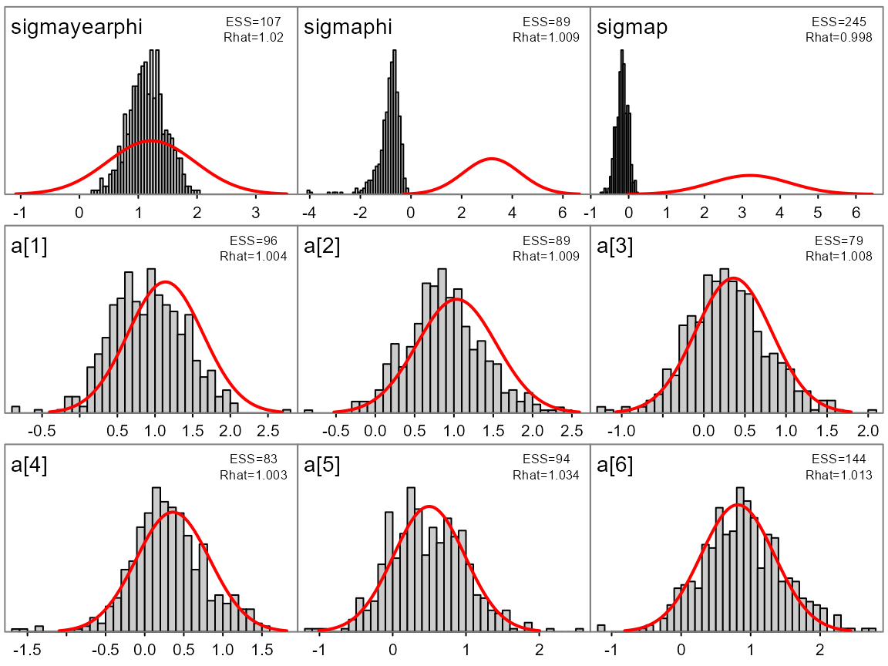
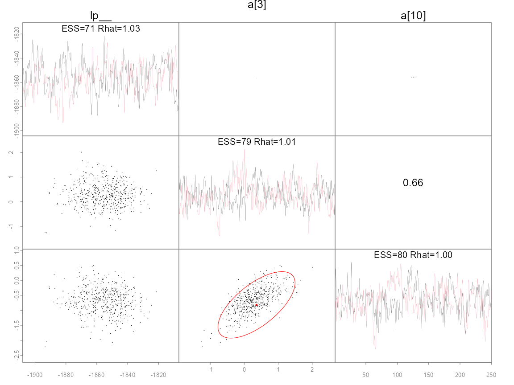
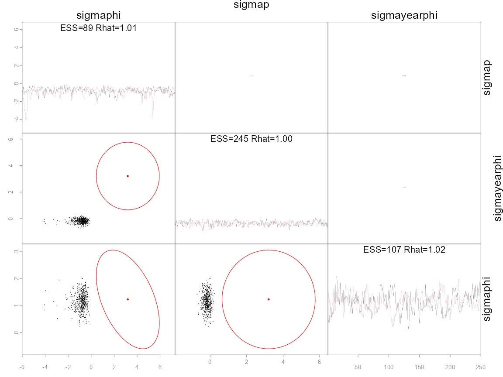

Key features of the packages:
- Run no-U-turn sampler (NUTS) or random walk Metropolis (RWM) MCMC
chains from within R using the
sample_nutsand ‘sample_rwm’ functions. - Parallel execution with automatic merging of chains and linking to other R packages provides a smooth, efficient workflow for ADMB users.
- Adaptation of the NUTS stepsize is automatically done during the warmup phase.
- The mass matrix options are: diagonal or dense adaptation during warmup, the estimated covariance (from admodel.cov file), or an arbitrary dense matrix can be passed from R.
- Easy diagnostic checking using functionality provided by packages
rstanandshinystan. - A ‘duration’ argument to stop the chains running after a specified period of time (e.g., 2 hours), returning whatever samples were generated in that period.
- When running multiple chains, whether in parallel or serial, samples are merged and written to the ‘.psv’ file. Thus, executing the model in the ‘-mceval’ phase uses all chains, including with an ‘mceval’ argument dictating whether to run in this phase when the sampling is finished.
- A modified pairs plot designed to help facilitate comparison between MLE estimates and covariances, and the posterior samples.
Typically, for well-designed models, NUTS works efficiently with default settings and no user intervention. However, in some cases you may need to modify the settings. See below for a brief description of NUTS and how you can modify its behavior and when needed. Guidance and performance specifically designed for fisheries stock assessment is given in [@monnahan2019].
Sampling for ADMB models
Setting up the model
In general very little is needed to prepare an ADMB model for use
with adnuts. As with any model, the user must build the
template file to return a negative log likelihood value for given data
and parameters. The user is responsible for ensuring a valid and
reasonable model is specified. Typical model building practices such as
building complexity slowly and validating with simulated data are
strongly encouraged. Users must manually specify priors, otherwise there
are implicit improper uniform distributions for unbounded parameters,
and proper uniform distributions for bounded parameters (see below for
more details).
The ADMB model is an executable file that contains the code necessary
for NUTS and RWM. When run, it typically has various input files and
generates many output files. As such, I strongly recommend
putting the model into a subdirectory below the directory containing the
R script (passed as the path argument).
This is required for parallel execution but is
recommended in general.
Sampling with sample_nuts and sample_rwm
Sampling for ADMB models is accomplished with the R functions
sample_nuts and sample_rwm which replace the
deprecated function sample_admb. These functions are
designed to be similar to Stan’s stan function in naming
conventions and behavior. Some differences are necessary, such as
passing a model name and path. The two MCMC algorithms, NUTS and RWM,
are built into the ADMB source code so this is just a wrapper function.
Also note that this function does not do optimization nor Variational
Inference.
The default behavior for NUTS is to run 3 chains with 2000
iterations, with a warmup (i.e., burn-in) phase during the first 1000.
There is no external thinning (in a sense it is done automatically
within the algorithm), and thus the -mcsave option does not
work with NUTS by design. These defaults work well in the case where
diagonal mass matrix adaptation is done (e.g., hierarchical models).
This adaptation often requires a long warmup period. For models starting
with a good mass matrix (e.g., from the MLE covariance or previous run),
a much shorter warmup period can be used. For instance
warmup=200 and iter=800 with multiple chains
may work sufficiently well during model development. Users of the RWM
algorithm will accustomed to running millions of iterations with a high
thinning rate. Do not do that!. The key thing to
understand is that NUTS runs as long as it needs to get nearly
independent samples. Consult the Stan documentation for advice on a
workflow for NUTS models (e.g., this
guide)
For poorly-constructed or over-parameterized models, the NUTS
algorithm will be potentially catastrophically slow. This is likely
common in many existing fisheries stock assessment models. In these
cases it can be very informative to run the RWM algorithm with
sample_rwm because it often provides fast feedback from
which the user can determine the cause of poor mixing (see [@monnahan2019]). Consult the ADMB documentation
for more information on a workflow with these samplers.
adnuts provides no new options for RWM compared to the
command line from previous ADMB versions (besides a better console
output), but the option for parallel execution and integration with MCMC
diagnostic tools provided by adnuts should be sufficiently appealing to
users. Once a model is more appropriately parameterized, NUTS should be
used. Further work on optimal parameterizations for fisheries model is
needed. This vignette only covers the functionality of the package.
One important overlap with Stan is with the control
argument, which allows the user to control the NUTS algorithm:
Metric or mass matrix (adapted diagonal or dense matrix) [
metric]Maximum treedepth for trajectories [
max_treedepth’]Target acceptance rate [
adapt_delta]Step size, which if NULL (recommended) is adapted [
stepsize]Mass matrix adaptation tuning parameters (not recommended to change) [
adapt_init_buffer,adapt_term_buffer,adapt_window]
This function returns a list (of class adfit) whose
elements mimic some of that returned by stan to be useful
for plugging into some rstan tools (see below).
mceval phase and posterior outputs
No special output files are required to run the model with
adnuts. In addition, the user can still use the
mceval_phase flag to run specific code on saved samples.
ADMB saves posterior draws to a .psv file. When executing the model with
-mceval it will loop through those samples and execute the
procedure section with flag mceval_phase() evaluating to 1.
This behavior is unchanged with adnuts, but is complicated
when running multiple chains because there will be multiple .psv files.
Thus, sample_nuts combines chains in R and writes a single
.psv file containing samples from all chains (after warmup and thinned
samples are discarded). This also works in parallel (see below).
Consequently, the user only has to set mceval=TRUE, or run
-mceval from the command line after adnuts
finishes sampling, in order to generate the desired output files.
Previously, ADMB required an estimated covariance function to use the
random walk Metropolis (RWM) algorithm. Thus, for models without a valid
mode or a Hessian that could not be inverted could not use MCMC methods.
With adnuts neither an MLE nor covariance estimate is
needed because NUTS adapts these tuning parameters automatically (see
below). However, if a mode exists I recommend estimating the model
normally before running MCMC.
sample_nuts or sample_rwm are strongly
recommended for running the MCMC. However, it is a convenience function
that runs the chains from the command line. The list returned contains
an element cmd which shows the user the exact command used
to call the ADMB model from the command line. The command line can also
be useful for quick tests.
Bounds & Priors
Parameter priors must be specified manually in the ADMB template
file. For instance, a standard normal prior on parameter B
would be subtracted from the objective as
f+=dnorm(B,0.0,1.0). Note that contributed statistical
functions in ADMB, such as dnorm, return the negative log
density and thus must be added to the objective function.
Parameter transformations are limited to box constraints within the
ADMB template (e.g., init_bounded_number). When used, this
puts an implicit uniform prior on the parameter over the bounds.
Implicit improper uniform priors occur when an unbounded parameter has
no explicit prior. The analysis can proceed if the data contain
information to update the prior, but if not the chains will wander
between negative and positive infinity and fail diagnostic checks.
Variance parameters are common and require bounds of (0, Inf). To
implement such a bound in ADMB, specify the model parameter as the log
of the standard deviation, and then in the template exponentiate it and
use throughout. Because of this parameter transformation, the Jacobian
adjustment is needed. This can be accomplished by subtracting the
parameter in log space from the negative log-likelihood. For instance,
use parameter log_sd in the template, then let
sigma=exp(log_sd), and update the objective function with
the Jacobian: f-=log_sd;. The recommended half-normal prior
for standard deviations can then be added as, e.g.,
f+=dnorm(sigma,0,2). This also holds for any positively
constrained parameters of which there are many in ecology and fisheries:
somatic growth rates, maximum length, unfished recruits, etc.
Initializing chains
It is generally recommended to initialize multiple chains from
“dispersed” values relative to the typical set of the posterior. The
sampling functions can accept a list of lists (one for each chain), or
function which returns a list of parameters (e.g.,
init <- function() list(a=rnorm(1), eta=rnorm(10)). If
no initial values are specified init=NULL then ADMB will
attempt to read in the optimized values stored in the admodel.hes file.
Typically these are the MLE (really MPD) values. Starting all chains
from the model is discouraged because it makes diagnostic tools like
Rhat (see below) inefficient. From this
discussion “…Rhat is ratio of overestimate and underestimate of
variance, but that overestimate is overestimate only if the starting
points are diffuse.” Consequently I strongly encourage creating
a function to generate reasonable random initial values.
If your model has inactive parameters (those with negative phases) they are completely ignored in the MCMC analysis (sampling, inputs, outputs, etc.), so the initial values are only for active parameters. This means you cannot read in the .par file and use it for initial values if there are inactive parameters.
Parallel sampling
Parallel sampling is done by default as of version 1.1.0. It is done
by parallelizing multiple chains, not calculations within a chain. The
snowfall package is used. n.cores chains will
be run by making temporary copies of the directory path
(which contain the model executable, data inputs, and any other required
files). Then a separate R session does the sampling and when done the
results are merged together and the temporary folders deleted. If errors
occur, these temporary folders may need to be deleted manually. The
default behavior is to set n.cores to be one fewer than
available to the system, but the user can override this and by setting
n.cores=1 the chains will be run in serial which can be
useful for debugging purposes.
Diagnostics and plotting results
Diagnosing MCMC chains
MCMC diagnostics refers to checking for signs of non-convergence of
the Markov chains before using them for inference, and is a key step in
Bayesian inference. There is a large literature related to this which I
refer unfamiliar readers to the Stan manual chapter
on convergence. Note that the user is entirely responsible for this
component of the analysis, adnuts only provides tools to
help with it.
The rstan package provides an improved function for
calculating effective sample size and
statistics vis the function rstan::monitor. This function
is automatically run for completed runs and stored in the output. For
very large models (either many parameters or many iterations) this
operation can be slow and thus a user may disable it with the argument
skip_monitor, however this situation should be rare as
these quantities should always be checked.
I use a hierarchical mark-recapture model of swallows to demonstrate functionality, taken from the examples in [@monnahan2017] read in as a RDS file from a previous run.
The diagnostic information can be directly accessed via the fitted
object fit. :
fit <- readRDS('fit.RDS')
print(fit)
#> Model 'swallows' has 177 pars, and was fit using NUTS with a '' metric
#> 2 chain(s) of 500 total iterations (250 warmup) were used
#> Average run time per chain was 2.57 minutes
#> Minimum ESS=71 (14.2%), and maximum Rhat=1.063
#> !! Warning: Signs of non-convergence found. Do not use for inference !!
#> There were 0 divergences after warmup
summary(fit$monitor$n_eff)
#> Min. 1st Qu. Median Mean 3rd Qu. Max.
#> 71.0 417.2 548.5 541.4 695.0 1238.0
summary(fit$monitor$Rhat)
#> Min. 1st Qu. Median Mean 3rd Qu. Max.
#> 0.9965 1.0001 1.0029 1.0045 1.0063 1.0626The Rhat values are sufficiently close to 1 but the minimum effective sample size is 71 which is too few for inference so longer chains should be run. Both the model parameters and the NUTS sampler parameters can be extracted as a data frame.
post <- extract_samples(fit)
str(post[,1:5])
#> 'data.frame': 500 obs. of 5 variables:
#> $ sigmayearphi: num 0.646 0.454 0.392 0.771 0.917 ...
#> $ sigmaphi : num -0.688 -0.996 -0.398 -1.275 -0.94 ...
#> $ sigmap : num -0.1945 -0.3027 0.0436 -0.1589 -0.3653 ...
#> $ a[1] : num 1.398 1.543 1.567 0.561 1.302 ...
#> $ a[2] : num 1.369 1.551 1.248 0.955 0.395 ...
sp <- extract_sampler_params(fit)
str(sp)
#> 'data.frame': 500 obs. of 8 variables:
#> $ chain : num 1 1 1 1 1 1 1 1 1 1 ...
#> $ iteration : num 251 252 253 254 255 256 257 258 259 260 ...
#> $ accept_stat__: num 0.0658 0.9882 0.827 0.8954 0.9686 ...
#> $ stepsize__ : num 0.0802 0.0802 0.0802 0.0802 0.0802 ...
#> $ treedepth__ : num 5 6 6 6 6 6 6 6 6 6 ...
#> $ n_leapfrog__ : num 31 63 63 63 63 63 63 63 63 63 ...
#> $ divergent__ : num 0 0 0 0 0 0 0 0 0 0 ...
#> $ energy__ : num -1863 -1848 -1856 -1861 -1875 ...These functions have options whether to include the warmup and log-posterior (lp) column, but also whether to return the unbounded parameters. The latter can be useful for debugging issues with parameters with high density near the bounds or poor mixing issues when using RWM chains.
The object returned by sample_nuts and
sample_rwm' can also be plugged directly into the ShinyStan interactive tool environment by calling the wrapper functionlaunch_shinyadmb(fit)after loading theshinystanlibrary. See ShinyStan documentation for more information on this. It is designed to provide NUTS specific diagnostics, but also serves as a more general tool for MCMC diagnostics and thus is beneficial for RWM chains as well. If desired, the output samples can be converted intomcmc`
objects for use with the CODA R package. For instance, CODA traceplots
can be accessed like this:
post <- extract_samples(fit, as.list=TRUE)
postlist <- coda::mcmc.list(lapply(post, coda::mcmc))
coda::traceplot(postlist)Or into bayesplot with a little massaging. Future
versions of adnuts may link these more directly. But for now it can be
done manually such as with the energy diagnostic:
library(bayesplot)
library(dplyr)
library(tidyr)
library(ggplot2)
color_scheme_set("red")
np <- extract_sampler_params(fit) %>%
pivot_longer(-c(chain, iteration), names_to='Parameter', values_to='Value') %>%
select(Iteration=iteration, Parameter, Value, Chain=chain) %>%
mutate(Parameter=factor(Parameter),
Iteration=as.integer(Iteration),
Chain=as.integer(Chain)) %>% as.data.frame()
mcmc_nuts_energy(np) + ggtitle("NUTS Energy Diagnostic") + theme_minimal()Plotting output
A convenience function plot_marginals is provided to
quickly plot marginal posterior distributions with options to overlay
the asymptotic estimates.
plot_marginals(fit, pars=1:9)
Many ADMB models have well defined modes and estimated covariance
matrices used to quantify uncertainty. The pairs_admb
function can be used to plot pairwise posterior draws vs the MLE
estimate and confidence ellipses. Major discrepancies between the two
are cause for concern. As such, this can be a good diagnostic tool for
both frequentist and Bayesian inference. In particular, it often is
informative to plot the slowest mixing parameters or key ones by name as
follows.
pairs_admb(fit, pars=1:3, order='slow')
#> Warning in pairs_admb(fit, pars = 1:3, order = "slow"): 'pairs_admb' is deprecated.
#> Use 'pairs' instead.
#> See help("Deprecated") and help("adnuts-deprecated").
pairs_admb(fit, pars=c('sigmaphi', 'sigmap', 'sigmayearphi'))
#> Warning in pairs_admb(fit, pars = c("sigmaphi", "sigmap", "sigmayearphi")): 'pairs_admb' is deprecated.
#> Use 'pairs' instead.
#> See help("Deprecated") and help("adnuts-deprecated").
The last plot shows the three hypervariances of this hierarchical
model. The diagonal shows traces of two chains (colors), where
alternative options for argument diag are ‘trace’
(default), ‘hist’ for histogram, and ‘acf’ for the autocorrelation
function. The remaining plots show pairwise posterior samples (black
points) for the remaining parameters. Divergences are shown as green
points if they exist (none do here). A red point shows the posterior
mode and an ellipse shows the 95% bivariate confidence region, taken
from the inverse Hessian calculated by ADMB. Since the log-posterior
(lp__) is not a parameter there is no ellipse. Note that the posterior
samples and asymptotic approximations for the two fixed effects
a match closely, whereas for the sigmaphi
hypervariance parameter there is a notable mismatch. This mismatch is
not surprising as estimates from optimizing hierarchical models are not
reliable. Since adaptive NUTS was used for sampling, the information
contained in red was not used and is only shown for illustration. The
option metric='mle' would use the inverse Hessian as a
tuning parameter (see section on metric below). More options for
plotting fits like these are available in the help file
?pairs_admb.
Mass matrix adaptation
I assume the reader is familiar with the basics of the mass matrix and its effect on sampling with NUTS (if not, see section below). Note that the mass matrix represents the geometry of the posterior in untransformed (unbounded) space, not the parameter space defined by the user. This space is typically hidden from the user but nonetheless is important to recognize when thinking about the mass matrix.
ADMB has the capability to do both diagonal and dense (full matrix,
as of version 12.2) estimation during warmup (adaptation). The initial
matrix can likewise easily be initialized in two ways. First is a unit
diagonal, and second is the “MLE” option, which more accurately is the
covariance matrix calculated from inverting the Hessian at the maximum
posterior density (the mode – informally referred to as the MLE often).
I refer to this as
.
As such there are 6 options for the mass matrix, summarized in the
subsequent table. Note that options 3 and 6 were not available before
adnuts version 1.1.0 and are only available for ADMB >=
12.2. Also not the differences in default behavior when running from
sample_nuts vs. the command line.
Note that dense estimation should be considered an experimental
feature. This option is in Stan but is rarely used. Stan users almost
always use option 2 below (the default in adnuts). As more
models are fit this advice will evolve. For now this is my best
guess:
| Initial matrix |
Adaptation | adnuts | Command line |
Recommended usage |
|---|---|---|---|---|
| Unit | None | adapt_mass=FALSE |
-mcdiag |
Rarely if ever used |
| Unit | Diagonal | (default) |
-mcdiag-adapt_mass
|
Use with minimal correlations, is unavailable, or >1000. Often the best choice for hierarchical models |
| Unit | Dense | adapt_mass_dense=TRUE |
-mcdiag-adapt_mass_dense
|
Use when strong correlations but is unavailable and <500 |
| None |
metric='mle'| (default) | When $\Sigma$ is good and $d$<1000 | | $\Sigma$ | Diagonal |metric=‘mle’<bradapt_mass=TRUE|-mcdiag<br>-adapt_mass| When $\Sigma$ is OK and $d$>500. | $\Sigma$ | Dense |metric=‘mle’<br>adapt_mass_dense=TRUE|-adapt_mass_dense` |
When is OK but <500 |
refers to the dimensionality (# of parameters) and this guidance is a very rough guess. The reason dimensionality matters is that there is a numerical cost to using a dense matrix over a diagonal one, and one that scales poorly with dimensionality. However, the more computationally expensive the model is (the prediction and log density calculations) the smaller relative cost of the dense calculations. Thus there is an interplay between the mass matrix form, dimensionality, model computational cost, and MCMC sampling efficiency.
In addition to these options, an arbitrary matrix M can
be passed via metric=M. This works by using R to overwrite
the admodel.cov file so that when ADMB runs it reads it in thinking it
was the estimated matrix. The file admodel_original.cov is copied in
case the user wants to revert it. Probably the only realistic usage of
this feature is when you have already run a pilot chain and want to
rerun it for longer, and wish to use the samples to generate an
estimated mass matrix. In this case use M=fit$covar.est
which is the estimate in unbounded space (see below). Note that if
M=diag(d) it is equivalent to the first three rows and if
M=
it is equivalent to the last three rows.
The following figure shows the step size of a single chain during warmup for these six options for a simple linear model, and demonstrates the general differences among them.
The three which start with a unit diagonal matrix are apparent by their small initial step sizes, while the three which start with dense are larger. There is a clear shift in the stepsize at iteration 125 which is when the first mass matrix update happens (and with improved knowledge of the geometry the optimal step size changes). A second update happens later but is not apparent, indicating the first was sufficient. All fits with a dense matrix end with the same approximate step size, which is larger than any without it. Option 3 starts off diagonal but after updating to a dense matrix performs equivalently. For the diagonal options, option 1 does not update, while option two starts at unit diagonal and aftering updating the diagonal performs equally well as option 5 which starts well.
This is the behavior on a trivial model, but it is often hard to estimate a good dense mass matrix, especially in the first few phases of warmup with very few samples. In such cases the Cholesky decomposition of the estimated matrix may fail. Instead of crashing the run I coded ADMB to instead do a diagonal estimate in this case, and try a dense update at the next phase, repeating until warmup is over. Warnings are printed to the console when this happens.
Which option to use in which situation is still an open question. Certainly for hierarchical models where is not helpful or doesn’t exist, option 2 is likely the best. For fisheries stock assessment models which already rely on options 4-6 are worth exploring.
The no-U-turn sampler implementation
Brief review of Hamiltonian Monte Carlo
Hamiltonian Monte Carlo is a powerful family of MCMC algorithms that use gradients to propose efficient transitions. We review the basics here but refer to interested readers to [@neal2011; @betancourt2017intro; @monnahan2017]. Instead of randomly generating a proposed point, to be rejected/accepted, HMC generates trajectories from which a point is chosen to be rejected/accepted. These trajectories use gradient information and an analogy of a ball rolling on a surface is often used. These trajectories are efficient when they can transition to nearly anywhere on the posterior (stark contrast with random walk algorithms). However, to do this they need to be well-tuned. Generally there are three aspects of the algorithms that need to be tuned.
- The step size. How big of steps between points on a single trajectory. Bigger steps means fewer calculations (and thus faster), but has a negative cost of rejecting more points.
- The trajectory length. How long should a trajectory should be depends on many factors, and is not constant over the posterior. If it is too short, HMC resembles inefficient random walk behavior. If it is too long, computations are wasted.
- The “mass matrix” used. This matrix tells the algorithm about the global shape of the posterior so that it can generate better trajectories. When large discrepancies between marginal variances exist, the trajectories will be less efficient (e.g., one parameter has a marginal variance of 1, and another a marginal variance of 1000).
The no-U-turn sampler is a powerful sampler because it automated the tuning of the first two of these aspects [@hoffman2014]. During warmup it tunes the step size to a target acceptance rate (default of 0.8) which has been shown to be optimal [@betancourt2014]. Most importantly, though, is that it uses a recursive tree building algorithm to continue doubling the trajectory until a “U-turn” occurs, meaning going any further would be wasteful computationally. Thus, trajectory lengths are automatically optimal.
The original algorithm was implemented into the Bayesian statistical
software Stan [@carpenter2017; @stan2017].
In addition to the automation of NUTS, Stan provides a scheme for
adapting the step size during the warmup phase. Estimated diagonal mass
matrices correct for global differences in scale, but not correlations.
A dense matrix can also be adapted, and corrects for global
correlations, but comes at a higher computation cost. Typically a
diagonal matrix is best and thus is default in both Stan and
adnuts.
These three extensions lead to efficient HMC sampling with little to no user intervention for a wide class of statistical models, including hierarchical ones [@monnahan2017]. Since publication, further developments have been made in HMC theoretical and practical research. For instance, Stan now includes an update called “exhaustive” HMC [@betancourt2016] that more efficiently samples from the points in a trajectory.
Algorithm implementation details
For ADMB adnuts uses the original algorithm presented in
[@hoffman2014]. However it also uses a
similar mass matrix adaptation scheme as used in Stan.
The algorithm is initiated with a unit diagonal mass matrix. During the first 50 iterations only the step size is adapted. After the next 75 iterations an estimated variance for each parameter (in untransformed space) is calculated and used as the new mass matrix. The next update occurs after twice the iterations as the previous update. This process repeats until the last 25 samples of the warmup phase. During this phase the mass matrix is held constant and only the step size adapt. See the Stan manual [@stan2017] for more details. The step size is adapted during all warmup iterations. No information is returned about mass matrix adaptation currently.
Once the warmup phase is over, no adaptation is done. Because of the adaptation the warmup samples are not valid samples from the posterior and must be discarded and not used for inference.
User intervention
In some cases you will need to adjust the behavior of the NUTS algorithm to improve sampling. Here I review the three options for intervention (step size, trajectory lengths, mass matrix) that a user can take, and when and why they might need to.
A maximum tree depth argument is used to prevent excessively long
trajectories (which can occur with poorly specified models). This is set
to 12 (i.e., a length of
steps) by default, which typically is long enough that a U-turn would
occur. However, in some cases a model may need to make longer
trajectories to maintain efficient sampling. In this case you will get
warnings about exceeding maximum tree depth. Rerun the model with
control=list(max_treedepth=14) or higher, as needed.
Recall that a single NUTS trajectory consists of a set of posterior
samples, resulting from a numerical approximation to a path along the
posterior. The step size controls how close the approximation is along
the true path. When the step size is too large and encounters extreme
curvature in the posterior a divergence will occur. Divergences should
not be ignored because they could lead to bias in inference. Instead,
you force the model to take smaller step sizes by increasing the target
acceptance rate. Thus, when you get warnings about divergences, rerun
the model with control=list(adapt_delta=.9) or higher, as
necessary. If the divergences do not go away, investigate the cause and
try to eliminate the extreme curvature from the model, for example with
a reparameterization [@stan2017;
@monnahan2017].
If there are extreme global correlations in your model, NUTS will be
inefficient when using a diagonal mass matrix (the default). In this
case, you can pass a dense matrix, estimated externally or from previous
runs (previous fits contain an element covar.est which can
be passed to the next call). Do this with
control=list(metric=M) where M is a matrix in untransformed
space that approximates the posterior. For ADMB models, you can try
using the MLE covariance by setting
control=list(metric="mle"). Note that, for technical reasons, you need to reoptimize the model with the command line argument-hbf`.
(ADMB uses different transformation functions for HMC so the covariance
would be mismatched otherwise). Note that when using a dense mass matrix
there is additional computational overhead, particularly in higher
dimensions. That is, a dense matrix leads to shorter trajectories, but
they take longer to calculate. Whether a dense metric is worth the
increase in sampling efficiency will depend on the model.
The following figure demonstrates the effect of the mass matrix on a 2d normal model with box constraints. The columns denote the different model “spaces” and the rows different mass matrices. Random, arbitrary NUTS trajectories are show in red over the top of posterior draws (points). The right column is the model space, the middle the untransformed, and the far left the untransformed after being rotated by the mass matrix. Note the differences in scales in the axes among plots. The key here is the rightmost column. The top panel is with no mass matrix (i.e., unit diagonal), and the trajectories ungulate back and forth as they move across the posterior. Thus to go from one end to the other is not very straight. When a diagonal matrix is used, the trajectories become noticeably straighter. Finally, with the dense matrix the trajectories are even better. This is the effect of the mass matrix: trajectories can move between regions in the posterior more easily.
Algorithm validity
Software bugs in the MCMC algorithms can manifest as biased sampling
from the target distribution. This is a serious issue and one that can
be hard to detect. One way to check this is to run the algorithms on
known distributions and check estimated properties against the
analytical. I checked this with normal, t with df=4 and df=10, gamma,
inverse gamma, truncated normal, and multivariate normal. I ran long
chains (1 million samples) with thinning rate of 10 for NUTS, and
compared this to an equivalent set of points from RWM and IID samples
from Monte Carlo samples (e.g., rnorm). Long chains and
thining ensured no residual autocorrelation. I repeated this for 20
chains for the RWM, NUTS with MLE metric, adaptive NUTS, and Monte Carlo
(mc). Results are plotted as relative error of different probabilities
(via pnorm etc.).
All cases are mean 0, and MC is indistinguishable from MCMC. This provides strong evidence that the algorithms are coded correctly. This does not mean that finite samples from target distributions are unbiased.